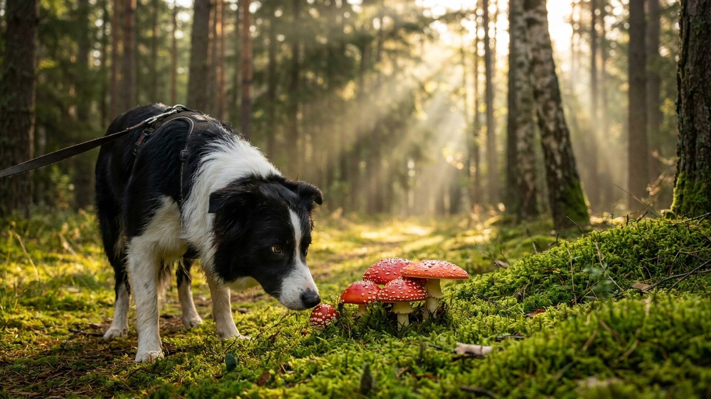

Летний грибной сезон — одна из самых недооценённых опасностей для собак на прогулке. Бледная поганка содержит аматоксины, смертельная доза которых для собаки массой 10 кг — около 30-40 г гриба (меньше одной шляпки). При этом первые симптомы появятся только через 6-24 часа после поедания, а к тому моменту токсин уже разрушает клетки печени. Большинство отравлений бледной поганкой заканчиваются гибелью животного именно потому, что упущено время.
Бледная поганка (Amanita phalloides) — абсолютный лидер по числу смертельных отравлений. Содержит два класса токсинов:
Летальная доза аматоксина для собаки — 0,1 мг на кг массы тела. В 1 г бледной поганки содержится около 1-3 мг аматоксина. Таким образом, для собаки 10 кг смертельна доза 1 мг аматоксина = 0,3-1 г гриба = несколько граммов шляпки. По клиническим данным, большинство летальных случаев происходит при поедании 30-60 г гриба, но и меньшего количества достаточно для тяжёлого поражения.
Мухомор красный (Amanita muscaria) — менее летален, чем бледная поганка, но токсичен. Содержит иботеновую кислоту и мусцимол — психоактивные нейротоксины. Симптомы: возбуждение или угнетение, слюнотечение, нарушение координации, галлюцинаторное поведение, судороги. Летальность при отравлении мухомором у собак значительно ниже, чем при поглощении бледной поганки, но тяжёлые случаи — не редкость.
Ложноопята (Hypholoma fasciculare и другие) — растут крупными группами на пнях и корнях, особенно в июле-сентябре. Привлекательны для собаки запахом. Содержат фасцикулол — вызывает гастроэнтерит, в тяжёлых случаях поражение ЦНС.
Мухомор вонючий, или «белый мухомор» (Amanita virosa) — белый гриб, часто путается с шампиньоном. Аматоксины в той же концентрации, что в бледной поганке. Крайне опасен.
Паутинники (Cortinarius orellanus, C. speciosissimus) — содержат ореланин, который избирательно разрушает почки. Особенность: латентный период 2-3 недели до появления симптомов почечной недостаточности — к тому моменту необратимые изменения уже произошли.
Клиническая картина аматоксинового отравления (бледная поганка, белый мухомор) имеет несколько стадий:
Отравление мухомором красным развивается быстрее: симптомы со стороны ЦНС — уже через 30-90 минут. Ложноопята дают выраженный гастроэнтерит через 1-3 часа.
Специфического антидота против аматоксинов не существует. Лечение — симптоматическое и поддерживающее, и оно требует стационарных условий:
Всё это возможно только в условиях стационарной клиники. Дома нет ни ресурсов, ни скорости.
Алгоритм зависит от того, что именно съела и как давно:
Никогда не ждите «пока пройдёт само». Аматоксиновое отравление с латентным периодом создаёт иллюзию, что всё нормально — именно тогда, когда нормально не всё. Каждый час имеет значение для прогноза.
Это поведенческая задача, и её решение требует системного подхода, а не разовых запретов.
Команда «Фу» / «Оставь» — базовая и обязательная. Отрабатывается на вкусных приманках в контролируемой обстановке задолго до прогулок в лес. Механика: собака тянется к предмету — команда + закрытый кулак с лакомством. Когда отворачивается — вознаграждение из другой руки. Цель: «не взятый» предмет → получила кусок из рук хозяина. Для надёжного результата нужно 2-4 недели ежедневных тренировок.
Намордник на прогулки в грибных местах. Не наказание — защита. Корзинчатый намордник (не тканевый) позволяет дышать, пить воду, но не подбирать с земли. Стоит приучить собаку к наморднику заранее — через постепенное знакомство с вознаграждением.
Поводок в зонах риска. Лес в грибной сезон (июль — октябрь) — зона риска. Свободный выгул в лесу без команды «Оставь» на уровне рефлекса — это риск, который можно не принимать.
Для полноты картины: часть грибов для собаки не токсична. Обычные белые грибы, подберёзовики, лисички, шампиньоны — не содержат опасных для собаки веществ. Но:
Грибной сезон в Центральной России длится с июня по октябрь. Командa «Оставь», намордник в лесу и знание симптомов отравления — три вещи, которые стоит подготовить прямо сейчас.